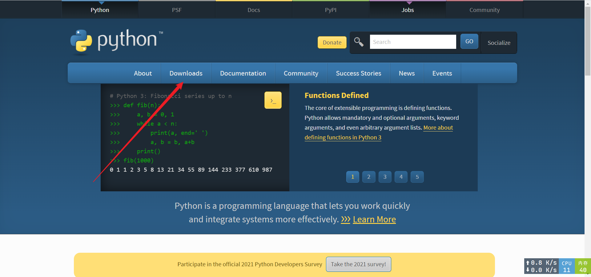
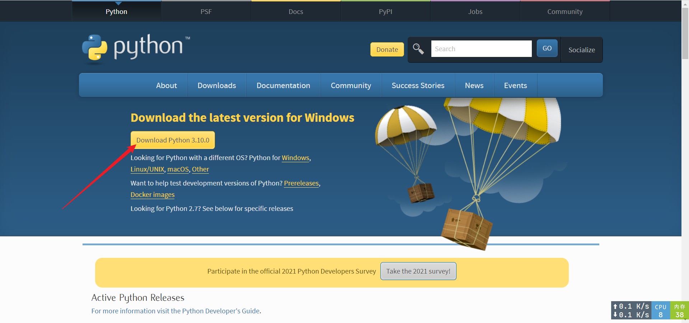

Python的安装
Python的安装
python是一门解释性语言，解释性语言需要安装运行环境。
1.windows系统
windows系统安装Python只需要进入python的官网点击导航栏里的Downloads选择你需要的版本即可。
 官网下载可能存在速度慢的问题，这个时候就可以用到国内的镜像了。可以去腾讯软件中心下载安装包
2.Linux系统
对于debian系的发行版只需要在终端输入如下语句:apt install python3
对于其他系的发行版也只需要调用其对应的包管理工具即可。
3.Android
Android的可以使用Termux这个终端模拟器来实现运行python代码。
Termux的安装地址安装完成termux后打开软件输入pkg install python即可。
本博客所有文章除特别声明外，均采用 CC BY-NC-SA 4.0 许可协议。转载请注明来自 简言的编程学堂！